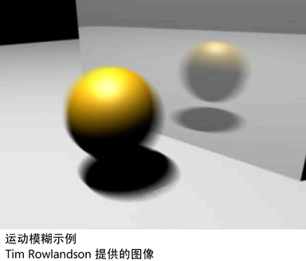

通过对动画场景中的对象进行模糊处理，运动模糊可呈现移动效果。
您可以启用和调整整个场景或特定对象的运动模糊。如果场景中的某些曲面不移动或仅稍微移动，请勿为其启用运动模糊。基于每个对象调整设置通常更快，并且可减少对渲染速度的影响。
选择对象形状节点时，可以使用属性编辑器基于每个对象启用“运动模糊”(Motion Blur)（在“渲染统计信息”(Render Stats)部分下）。
Maya 硬件渲染细节
仅支持 3D 运动模糊。
您可以在视口中启用运动模糊。若要调整其设置，请选择“渲染器 > Viewport 2.0”(Renderer > Viewport 2.0) >  ，然后调整“运动模糊”(Motion Blur)部分中的设置。请参见 Viewport 2.0 选项。
，然后调整“运动模糊”(Motion Blur)部分中的设置。请参见 Viewport 2.0 选项。
注： 仅在变换动画（例如在反弹球上）期间才显示视口中的运动模糊。它不会显示在仅由变形更改或移动的蒙皮网格上。

Arnold for Maya 渲染细节
若要设置使用 Arnold for Maya 渲染时的运动模糊，请参见 Arnold for Maya 用户手册。
Maya 软件渲染细节
Maya 软件同时支持 2D 和 3D 运动模糊。
若要设置运动模糊，请调整“渲染设置”(Render Settings)：“Maya 软件”(Maya Software)选项卡的“运动模糊”(Motion Blur)部分中的设置。
常规运动模糊和 Maya 软件渲染限制
- 运动模糊会禁用并行解算模式，这意味着您可以使用缓存播放(Cached Playback)。
- 运动模糊不适用于软件粒子。
- 当用灯光照亮移动对象时，对象的阴影不会正确模糊。
- 如果移动照亮曲面的聚光灯，在整个曲面上移动的聚光灯光束不会模糊。
- 运动模糊在光线跟踪反射和折射中无法渲染。
相关主题
-
有关运动模糊的详细信息，请参见聚焦和模糊。